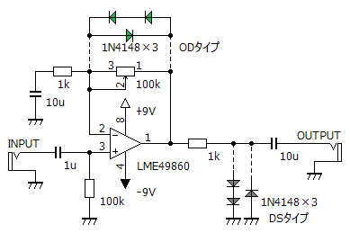
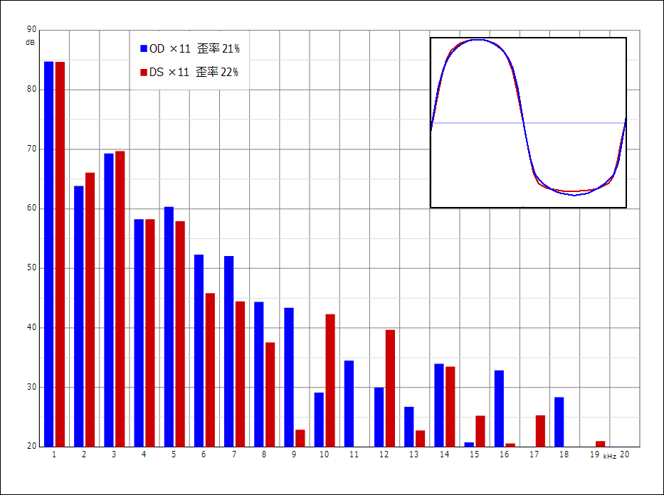
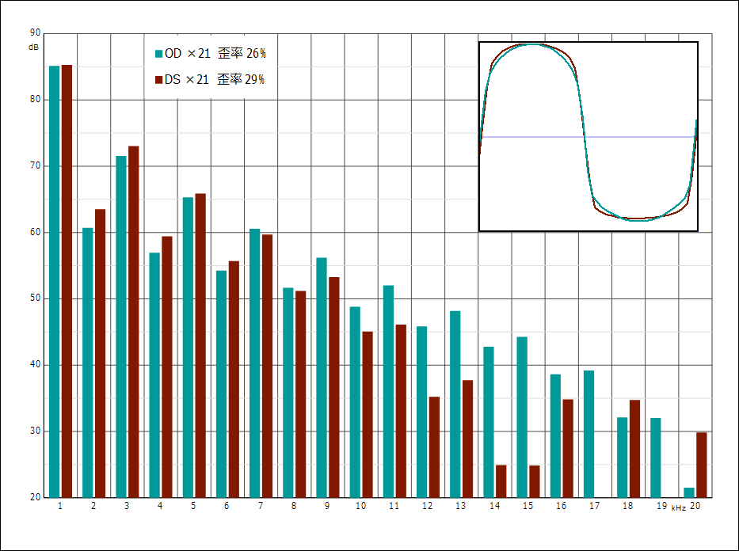
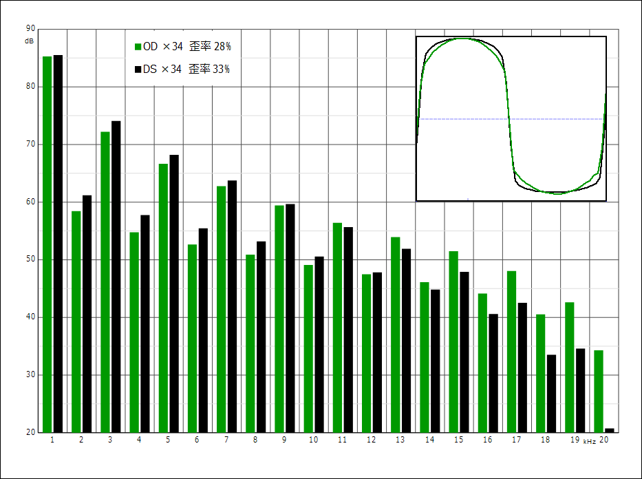
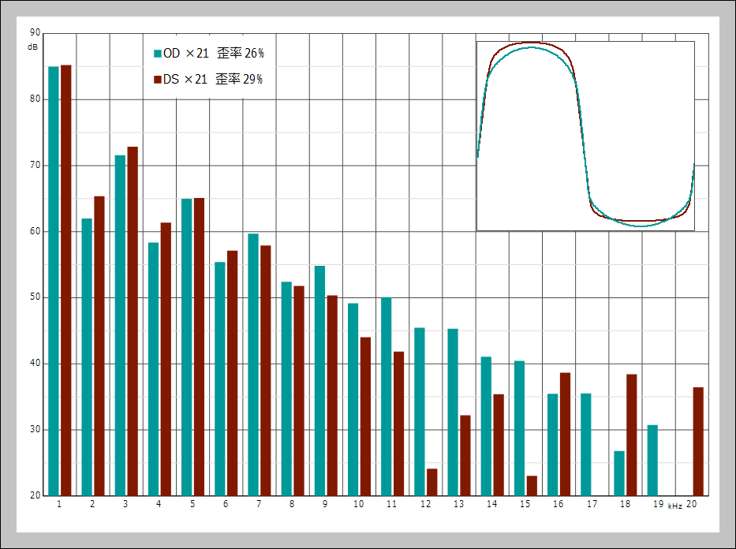

歪みと波形・倍音その6（ダイオードの位置）
2017年08月10日 カテゴリー：歪みと波形・倍音
歪み系エフェクターでは多くの場合、波形クリップのためにダイオードが使われます。ダイオードクリッパーとかクリッピングダイオードという呼び方があるようです。このダイオードの回路上の位置を変更し、波形・倍音の違いを調べました。
歪みと波形・倍音 記事一覧
▽回路図

非反転増幅回路の帰還部分にダイオードを入れる場合をODタイプ、出力にダイオードを入れる場合をDSタイプと勝手に呼ぶことにします。偶数次倍音も出るように、非対称クリッピングにしました。入力は1kHzサイン波、約0.14Vrmsです。音量はDSタイプの方が小さくなるため、各タイプ録音後ノーマライズしています。
※Twitterにて指摘をいただき、回路図左上にコンデンサを追加しました。増幅率を変更し、全データを差し替えています。（2017年8月12日）
▽11倍増幅

ODタイプの方が倍音が多そうに見えますが、なんともいえない感じです。聴感上は、ODタイプの方が高域が出ているように感じました。
▽21倍増幅

2～6次倍音はDSタイプの方が多く、7次倍音以降はODタイプの方が多いです。聴感上も、ODタイプの方が高域が出ているように感じました。
▽34倍増幅

DSタイプの方が歪率が高く、全体的に倍音が多いです。聴感上はあまり違いがわかりません。波形については、どの増幅率でもODタイプの方が丸みを帯びた形になっています。
さらに増幅率を上げていくと、ODタイプは歪率が31%程度で頭打ちになったので、深い歪みは得にくいようです。DSタイプは歪率が上がり続けましたが、波形の角が鋭くなるので、ICの歪みが混ざっていると思います。
・総評（のようなもの）
ODタイプは高次倍音が出やすい（クリアな音に感じる）、DSタイプは低次倍音が出やすい（太い音に感じる）というような傾向がわかりました。LED対称クリッピングでも測定しましたが、同じ傾向のようです。丸い波形になるODタイプの方がなんとなく低域寄りな音になるイメージがあったので、意外な結果となりました。
---以下2017年8月20日追記---
▽LTspiceでのシミュレーション結果（21倍増幅）

入力電圧は0.12Vrmsで同じぐらいの歪率になりました。実測と違う部分はあるものの、倍音の出方の傾向は大体同じといってよいと思います。シミュレーションでも歪みの特徴は充分参考になるようです。